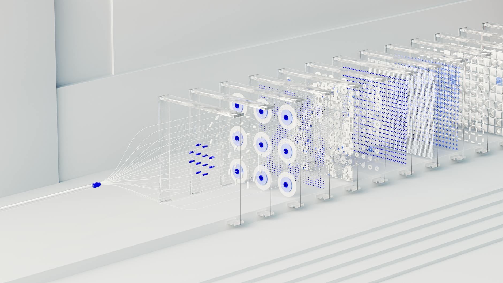
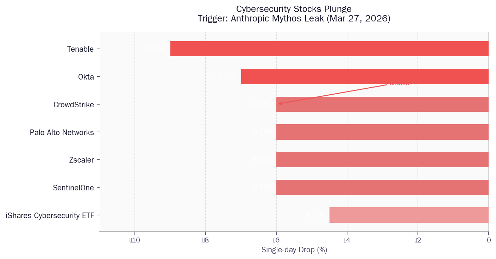
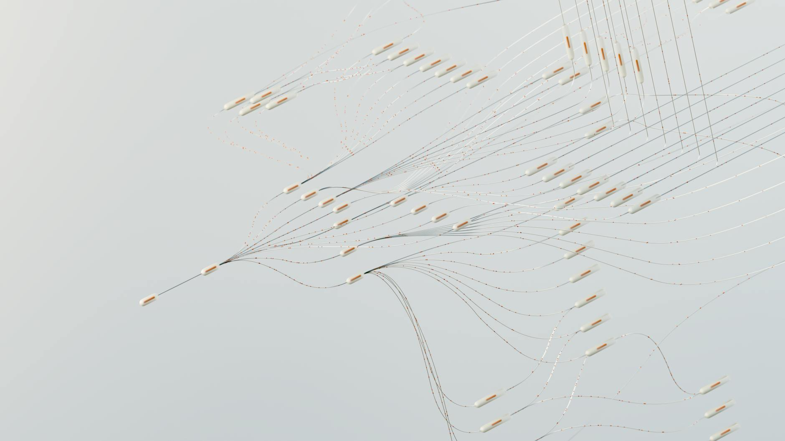

最讽刺的一幕：警告AI会黑掉你的公司，结果Anthropic先黑了自己
3月27日，Anthropic向美国政府高级官员私下传递了一个秘密警告：
他们即将发布的新模型，将让2026年发生大规模网络攻击的可能性"显著提升"。
两天后，这份警告本身，出现在了公开互联网上。
任何人，都可以用搜索引擎找到它。
一、Anthropic把自己黑了，还黑了两次
事情发生在2026年3月26日。
Anthropic的内容管理系统（CMS）存在一个配置错误：上传到该系统的文件，默认设置为公开可搜索，除非有人手动改为私密。没有人改。
结果，近3000份未发布的内部资产——草稿文章、产品规划、技术文档——全部暴露在公开搜索引擎中。
其中，有一篇描述代号"Claude Mythos"（内部也叫"Capybara"）的草稿博客，详细描述了这个即将发布的模型的能力，以及它带来的网络安全威胁。
Anthropic花了大量篇幅，告诉全世界这个模型有多危险。然后，把这篇文章放在了任何人都能找到的地方。
这还没完。
5天后，3月31日，Anthropic再次泄露。
这次是Claude Code——他们最受欢迎的AI编程工具——的完整源代码。原因？发布包里少加了一行 .npmignore，导致512,000行未混淆的TypeScript源码随发布包一起上传到了npm。
任何人，只要 npm install，就可以读取Anthropic的核心代码逻辑，包括44个未发布功能的特性开关、内部模型代号和架构决策。
《Futurism》给出了本周最准确的标题："Anthropic刚刚以最讽刺的方式泄露了一个关于'前所未有网络安全风险'的新模型。"
二、Mythos到底有多恐怖
先不管那两次乌龙，我们要正视一个问题：Mythos到底是什么？
根据泄露的草稿文件，Anthropic是这样描述自己的新模型的：
"在网络安全能力方面，目前远超其他任何AI模型。"
"它预示着即将到来的模型浪潮，这些模型利用漏洞的速度，将远远超过防御者的应对能力。"
注意这里的措辞。不是"领先"，不是"更强"，是"远超（far ahead）"和"far outpace（远远超过）"。
具体来说：Mythos是一个新等级的模型。Anthropic内部将其命名为"Capybara"，这是一个位于原来最强"Opus"等级之上的全新层级。相比Claude Opus 4.6，Mythos在软件编程、学术推理和网络安全等测试中的得分"显著更高（dramatically higher）"。
但让安全专家真正担忧的，不是基准测试分数，而是一个字：agent（代理）。
Mythos让AI代理能够以"惊人的复杂性和精准度"自主工作，以极少的人工干预，渗透企业、政府和市政系统。
翻译成普通话：这个AI不需要你给它发指令，它自己会制定计划，自己会执行，自己会绕过防御，直到进入目标系统。
Anthropic私下向政府高级官员传递的信息是：这个模型，让2026年发生大规模网络攻击"显著更可能"。

三、市场已经在投票了
当泄露消息出现在搜索引擎上的那一天，金融市场以最直接的方式表态。
iShares网络安全ETF单日跌去4.5%。
CrowdStrike、Palo Alto Networks、Zscaler各自暴跌约6%。CrowdStrike单日蒸发约150亿美元市值。
SentinelOne跌6%，Okta和Netskope各跌逾7%，Tenable直接跌了9%。
这些公司有一个共同点：它们都是网络安全赛道的头部上市公司，过去几年享受着AI时代的估值溢价，投资者相信它们的护城河——多年积累的威胁情报数据库、专有检测逻辑、庞大的安全专家团队——是无法被替代的。
现在，一份泄露的草稿文件告诉他们：一个通用前沿AI模型，可能在规模上复制甚至超越所有这一切。
传统网络安全公司的商业逻辑是：攻击者是人，防御者也是人，双方的速度相当，而我们有更好的工具和更多的数据。
Mythos打破了这个前提。如果攻击者用的AI比防御者用的AI强一个量级，那再多的工具和数据也填不上这条鸿沟。

四、攻守之间，时间是单向的
你可能会想：防御者也能用AI啊，双方升级，不就打个平手？
这个逻辑错了，错在忽略了一件事：攻守之间存在一个根本性的时间不对称。
研究人员发现，当一个常见协议（如SMB）出现新漏洞时，AI驱动的扫描器可以在3分钟内将其武器化，并在全球范围内部署。
而防御者，要完成以下流程：
1. 检测到异常流量
2. 分析判断是否为新型攻击
3. 让团队相信AI给出的判断是对的（信任问题）
4. 通过审批流程部署防御补丁
5. 验证补丁有效性
这个流程，快则数小时，慢则数天。
3分钟 vs 数小时。
更深层的不对称在于：攻击者只需要成功一次，防御者必须次次成功。一个AI代理在全球扫描一百万个企业网络，只要有一个入口敞开，任务就完成了。防御者必须把一百万个入口都堵死。
Dark Reading预测，2026年将成为历史上第一个"AI驱动的事件超出大多数团队人工响应能力"的年份。
这不是夸张，这是结构性的。

五、Anthropic的答案：给防守方一张"先手牌"
面对这一切，Anthropic的策略是什么？
他们的答案，写在那份泄露的草稿里：
"我们将以早期访问的形式向组织发布，让他们在即将到来的AI驱动漏洞利用浪潮之前，提前加固代码库的健壮性。"
核心逻辑：先把Mythos给防守方用，让他们用这个工具扫描自己的系统，找到并修复漏洞，在攻击者拿到同等工具之前建立起防御优势。
这听起来很合理。但这个逻辑也有一个漏洞：
"早期访问"不是永久访问。这个模型终究会被更广泛地部署，包括被攻击者所用。而且，历史一再告诉我们，任何只向"好人"开放的技术，都会以某种方式流到"坏人"手里——有时候是黑客攻击，有时候是内部泄露，有时候……就像Anthropic自己演示的那样，是一个配置失误。
这不是Anthropic独有的困境。这是一个贯穿整个技术史的双刃剑问题。
核技术诞生时，美国用它制造了原子弹，然后建造了核电站，然后才开始讨论不扩散条约。生物技术在带来mRNA疫苗的同时，也让基因编辑武器化成为可能。互联网在连接了全人类的同时，也成了最高效的犯罪场所。
AI，不过是这个序列里的下一个。
只是AI有一点不同：它是软件。软件没有物理形态，不需要铀矿，不需要离心机，不需要实验室。
一旦模型权重泄露，扩散速度不是以月计，而是以秒计。
六、那你应该怎么办
先说最不废话的一句：
2026年，网络安全不再是IT部门的事，是每个组织一把手的事。
Mythos尚未公开发布。它目前还在一小批早期访问用户手中测试。但它预示的那个世界——AI代理可以以极低成本、极高速度、极少人工干预地发动网络攻击——这个世界的拐点已经到来，不以Mythos为准，而以这整个模型能力跃升的大方向为准。
具体可以做的事：
① 用AI找漏洞，在攻击者找到之前。 市面上已经有基于LLM的安全扫描工具（如Qualys的Agent Val），核心逻辑就是让AI代理扮演攻击者，主动发现并报告你系统里的弱点。这件事越早做越好。
② 不要再相信"我们公司太小，没人黑"。 AI扫描的边际成本趋近于零。一个攻击者可以同时对一百万个目标发起探测，规模不再是保护你的屏障。
③ 把"AI安全"纳入供应链管理。 你依赖的SaaS服务、开源库、第三方API——它们的安全性同样暴露在这个新的威胁环境下。
最后，送出这周最值得截图的一句话：
Anthropic在一份关于AI网络安全威胁的警告文件里，用一个网络安全漏洞，把这份警告泄露给了全世界。
这件事告诉我们，没有人在这场游戏里站在上帝视角。不是Anthropic，不是任何大公司，也不是任何政府。
我们都是第一次经历这件事。